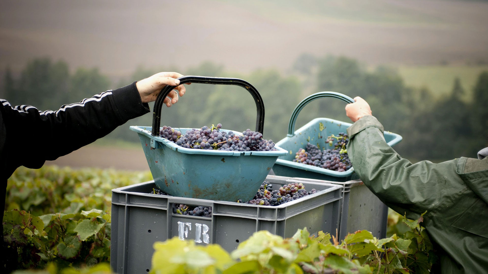

Dès 22,50€
Brut Tradition

Le brut le plus direct pour entrer dans le style maison: frais, droit et à l’aise de l’apéritif jusqu’au repas.
- Style droit, frais, très lisible
- Fruits de mer, poisson, volaille
- 75 cl, magnum et carton de 6
Trois cuvées élaborées à Channes, proposées en direct par la maison avec des formats clairs et un règlement sans détour.
Chaque cuvée prolonge la même maison avec une place différente à table. L’idée est de comprendre vite le style, puis de choisir le format qui convient.
Le brut le plus direct pour entrer dans le style maison: frais, droit et à l’aise de l’apéritif jusqu’au repas.

La cuvée la plus délicate de la maison, élaborée en rosé d’assemblage pour offrir, célébrer et garder un vrai fond de brut.

La cuvée la plus ample de la maison, pensée pour le foie gras, le dessert et les accords de contraste, avec une douceur tenue par la fraîcheur.
Chaque cuvée garde ses formats essentiels, ses repères de service et le contexte utile pour choisir juste sans rallonger le parcours.

Le brut qui situe le plus simplement la maison: fruit net, fraîcheur de cave et vraie tenue à table.
Brut Tradition est le repère le plus direct de la maison : un vin frais, droit et lisible, pensé pour accompagner aussi bien l’apéritif que la table.
L’assemblage Pinot Noir (70%) et Chardonnay (30%) tient cette ligne : le Pinot Noir apporte le fruit et la structure, le Chardonnay la tension et l’allonge.
Vieilli au minimum 15 mois en cave, il garde ce qu’on attend d’une cuvée de maison : de la tenue, de la précision et un service simple à comprendre.

La cuvée la plus simple à offrir ou à mettre sur une table de fête: plus fruitée, plus délicate, mais toujours tenue comme un vrai brut de maison.
Brut Rosé reprend la ligne de la maison avec plus d’éclat : un vin fruité, délicat et immédiatement lisible au service.
Élaboré en rosé d’assemblage, il garde une vraie tension de brut derrière la robe et les notes de fruits rouges.
C’est la cuvée la plus simple pour offrir, remercier ou installer une table plus vive sans perdre la justesse du vin.

La cuvée de contraste de la maison, pensée pour le foie gras, le dessert et les moments plus gourmands, avec une douceur tenue par la fraîcheur.
Demi-Sec montre une autre lecture de la maison : plus ample, plus gourmande, mais encore tenue par la fraîcheur et la précision du service.
Le dosage plus élevé apporte de la douceur, sans alourdir le vin lorsque le moment de service est bien choisi.
Foie gras, desserts peu sucrés, brunch ou accords sucrés-salés : c’est la cuvée à retenir quand le repas demande un rythme différent.
Les cuvées, les formats, les frais de livraison et le contact de la maison restent visibles jusqu’à la dernière étape.
1 bouteille 12€, 2 bouteilles 10€, 3 bouteilles 6€, 4 ou 5 bouteilles 10€, offerte dès 6 bouteilles en 75 cl. Magnum: 10€ par unité.
Le règlement s’effectue via Stripe, après relecture du panier et des frais de livraison.
champagne.christelle.phlipaux@gmail.com
Téléphone :
+33 6 82 20 34 30
4 rue de
Villiers, 10340 Channes
Les retours relus avant publication aident à choisir une cuvée, un format ou un moment de service.